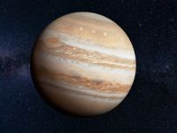

Mercurio es el planeta más pequeño y cercano al Sol en el sistema solar, con una superficie rocosa llena de cráteres, similar a la Luna. Carece de atmósfera significativa, lo que provoca temperaturas extremas que oscilan entre 427 °C de día y -184 °C de noche. Completa una órbita rápida en 88 días terrestres, pero rota muy lentamente.
Venus es elsegundo planeta desde el Sol, a menudo llamado el gemelo de la Tierra debido a su tamaño similar. Como el planeta más caliente del sistema solar, tiene una atmósfera densa y tóxica de dióxido de carbono y nubes de ácido sulfúrico. Gira en el sentido de las agujas del reloj (retrógrado) y es conocido por su temperatura superficial extrema, que alcanza aproximadamente
, lo suficientemente alto como para fundir el plomo.
La Tierra es el tercer planeta del sistema solar, formado hace unos 4600 millones de años. Es un planeta rocoso y el único conocido con vida, con una superficie cubierta en un 70% por agua (océanos, ríos) y el resto por continentes. Posee una atmósfera respirable, placas tectónicas y un satélite natural, la Luna.
Marte, conocido como el «planeta rojo» por el óxido de hierro en su superficie, es el cuarto planeta del sistema solar y el segundo más pequeño. Es un mundo desértico y frío con una atmósfera delgada de dióxido de carbono, hielo subterráneo, grandes volcanes como el Olympus Mons y, actualmente, es explorado principalmente por robots como el Perseverance.


Saturno es el sexto planeta desde el Sol y el segundo planeta más grande de nuestro Sistema Solar. Es un gigante gaseoso compuesto principalmente de hidrógeno y helio, famoso por sus brillantes anillos formados en gran parte por hielo de agua. Saturno gira rápidamente, tiene vientos poderosos y alberga una gran familia de lunas, entre ellas Titán.
Urano es el séptimo planeta del sistema solar, ubicado a unos 2900 millones de kilómetros del Sol. Es un gigante de hielo, compuesto principalmente de hidrógeno, helio y compuestos como el agua, amoníaco y metano. Urano es conocido por su tono azul verdoso, resultado del metano en su atmósfera que absorbe la luz roja. A diferencia de otros planetas, rota de lado, con su eje de rotación casi perpendicular a su órbita, lo que provoca estaciones extremas.
Neptuno es un planeta del sistema solar, el más alejado del Sol y el más pequeño de los cuatro gigantes gaseosos. Fue observado por primera vez en 1846 y está conformado por una mezcla de agua, amoníaco y metano sobre un centro sólido rocoso. Su atmósfera se compone principalmente de hidrógeno, helio y metano. La elevada concentración de metano le da su apariencia azul, ya que este gas absorbe la luz roja y refleja la luz azul.
Júpiter es uno de los cinco planetas que pueden verse a simple vista desde la Tierra. A pesar de estar a una distancia que alcanza los 600 millones de km de la Tierra, Júpiter es uno de los objetos más brillantes del cielo nocturno, por detrás de Venus y la Luna. Las noches en las que Venus no es visible, Júpiter se convierte en el planeta más brillante del firmamento.

El sistema solar es un sistema planetario constituido por una estrella que ejerce atracción gravitacional sobre los cuerpos celestes que giran a su alrededor. Según la NASA, se cree que nuestro sistema solar se formó a partir de una sola nube plana de gas. Otra teoría, indica que se formó cuando un objeto de gran tamaño pasó cerca del Sol, y empujó una corriente de gas lejos de él. Esta última explicación sugiere que los planetas surgieron de esta corriente gaseosa.
Independientemente de cómo fue su origen, la agencia espacial estadounidense estima que este complejo sistema existe desde hace más de 4 mil millones de años.
.png)
.png)